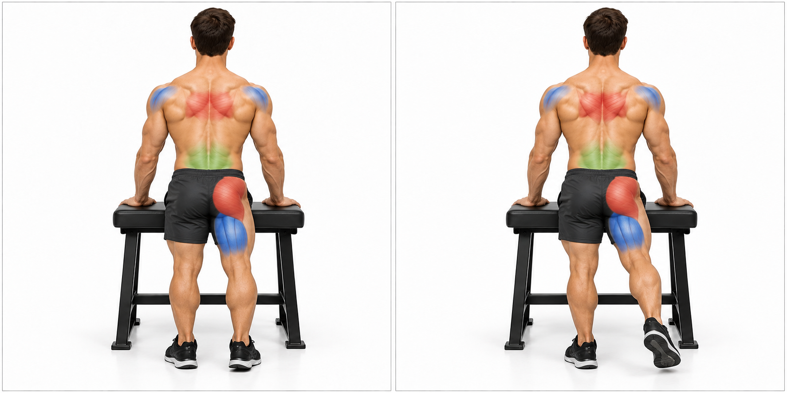

Record your setup on the page; include it in your PDF download.
START HERE / ONE SHARED PROTOCOL
Understand your setup. Then follow the exercise.
Read the protocol once. Use the same illustrated exercise sheet with any suitable band setup. The weekly plan tells you which exercises to follow each day.
Three band configurations—not three copies of the exercises
The gauge labels R1, R2 and R3 describe available equipment. They do not automatically change sets, repetitions, muscle focus or exercise technique.
R1 / 1 KIT AVAILABLE
Single band
Record one selected band per working line. One kit has only one of each rating; use one side at a time when a matching pair is unavailable.
R2 / 2 KITS AVAILABLE
Two-kit options
Up to 2 bands of a selected rating can be available per line. Matching separate lines and combined bundles are different setups; record which you use.
R3 / 4 KITS AVAILABLE
Four-kit options
Up to 4 bands of a selected rating can be available per line. Matching separate lines and combined bundles are different setups; record which you use.
These are equipment options, not required loads. Even a single labelled band can be too much. Begin unloaded or with an appropriate lighter option when needed.
Band types & label ratings
KUZARO 360 / long-line bands
One kit has one band of each rating:
35 lb45 lb55 lb65 lb75 lb85 lb
The six labels total 360 lb across the kit. This is not the resistance of one line. Keep separate handles and separate left/right lines identified.
HPYGN / short-band & bar system
4 × 65 lb total: two bands on each side. The recorded configuration is 130 lb nominal per side, or 260 lb combined nominal.
This is a separate equipment record. Do not substitute that paired short-band load into a long-line exercise automatically. The supported full-body sessions also include unloaded exercises.
How to read the resistance gauge
Check the band type. “No band” means the illustrated starting exercise is unloaded.
Choose the equipment configuration. R1, R2 or R3 refers to the available kit setup.
Record the label and band count. For equal-rated bands, nominal total = label × count, for one working line. Record each independent line separately.
Use the figure as a setup record. The gauge is not a target to fill. Label pounds are not measured hand force, hardware ratings or free-weight equivalents. Actual tension changes through the movement.
One session protocol
1. Prepare
Inspect bands, anchors, clips and handles. Establish a stable chair, bench or fixed support.
Warm up with comfortable activity and rehearse the movement without added tension.
2. Set your base
Place feet and supporting hand as shown in the exercise sheet.
Keep joints soft. Brace gently while breathing normally.
3. Move & return
Follow the illustrated path through a comfortable range.
Control the return. Stop before twisting, shrugging or losing balance changes the movement.
4. Record & recover
Write down band label, count, anchor height, starting distance and completed work.
Record how the session and next day felt before deciding to add work or tension.
Sets & repetitions are separate from R1–R3
The session sheets keep one common starting baseline: two sets for main exercises, one for supporting exercises, and one easy set for control drills. Finish while about four more good repetitions remain possible. Rest about 60–120 seconds, or longer if needed. These are starting settings, not a test.
Day 5 uses no more than two sets. Day 6 is one easy set with at least five more good repetitions possible, or take rest. Days 4 and 7 are rest days. Equipment configuration does not override those limits.
Red · Main / movement focusBlue · Secondary / assistance and local controlGreen · Base / support / holds your positionOrange-edged charcoal / band
A muscle can change role between exercises. Colours illustrate roles, not measured activation. Read the written details for hidden muscles.
Progress & stop rules
Select resistance only after confirming comfortable motion, control, anchor/attachment ratings and current tolerance. Bodyweight or unloaded practice is valid. A 35 lb labelled band may already be too much. Label sums are not measured hand force or hardware ratings.
Day 6 is easy skill practice, not a second hard full-body session. Rest instead if there is residual fatigue, pain or altered control. No schedule can guarantee injury prevention.
Stop for pain, new numbness or weakness, dizziness, slipping grip, moving support or damaged bands. Keep the recoil path clear and follow manufacturer limits. Current symptoms, restrictions and tolerated loads remain unconfirmed; review suitability where injury, pain or medical restrictions apply.
References & source scope
Personal equipment and movement records come from Kinetics. Supported complements are editorial adaptations; this is an educational guide.
Use one exercise sheet for every band setup. R1, R2 and R3 identify available equipment; the gauge beside each exercise records the band label and count.
2. Follow the days in order
Open the matching guide for sets, repetitions and illustrated instructions. Record what you did below each day.
No strength session today. Optional gentle, comfortable activity.
3. Set up before you move
Set your base. Place your feet and support hand as shown.
Brace gently. Keep breathing and keep knees and elbows soft.
Move, then return slowly. Follow the comfortable range in the exercise sheet.
Stop for pain or lost control. Open the exercise sheet before trying a new movement.
Muscle colours, band selection and equipment notes
Red · Main / drives the movementBlue · Secondary / assists and controlsGreen · Base / support / steadies your positionOrange-edged charcoal / resistance band
Choose resistance individually. One, two and four available KUZARO kits are the level 1, 2 and 3 equipment ceilings; these are not required loads. Band label sums are not measured hand force or hardware ratings. Current restrictions and tolerated loads remain unconfirmed.
Sit tall with both feet planted. Start with the handle beside the chest, neutral wrist and elbow below shoulder height. Let the shoulder blade move naturally.
Effort: about four more good repetitions still possible. Unloaded control drills stay easy; do not force fatigue. Rest 60-120 seconds, or longer as needed.
Record the setup and response
Use Download PDF to include typed entries. HTML-copy download preserves typed entries too; entries are not sent to a server.
DAY 2 / SESSION
Lower body / supported base
Knee and hip extension, hamstrings, calves and lateral hip control
Read each linked technique guide before starting. Warm up and rehearse unloaded; check the base, breathing and return.
Effort: about four more good repetitions still possible. Unloaded control drills stay easy; do not force fatigue. Rest 60-120 seconds, or longer as needed.
Record the setup and response
Use Download PDF to include typed entries. HTML-copy download preserves typed entries too; entries are not sent to a server.
DAY 3 / SESSION
Pull / arm control
Back pulling, shoulder-blade control and elbow flexors
Read each linked technique guide before starting. Warm up and rehearse unloaded; check the base, breathing and return.
Plant both feet in a comfortable stagger. Support the opposite palm under its shoulder. Incline from the hips; keep neck and trunk aligned, knees soft.
Effort: about four more good repetitions still possible. Unloaded control drills stay easy; do not force fatigue. Rest 60-120 seconds, or longer as needed.
Record the setup and response
Use Download PDF to include typed entries. HTML-copy download preserves typed entries too; entries are not sent to a server.
DAY 5 / SESSION
Full body A / moderate
A modest whole-body session; no extra accessory finishers
Read each linked technique guide before starting. Warm up and rehearse unloaded; check the base, breathing and return.
Sit tall with both feet planted. Start with the handle beside the chest, neutral wrist and elbow below shoulder height. Let the shoulder blade move naturally.
Plant both feet in a comfortable stagger. Support the opposite palm under its shoulder. Incline from the hips; keep neck and trunk aligned, knees soft.
Effort: about four more good repetitions still possible. Unloaded control drills stay easy; do not force fatigue. Rest 60-120 seconds, or longer as needed.
Record the setup and response
Use Download PDF to include typed entries. HTML-copy download preserves typed entries too; entries are not sent to a server.
DAY 6 / SESSION
Full body B / easy practice
One easy set per movement at every level; choose rest if not recovered
Easy practice only. One set, 5+ more good repetitions still possible and no progression today. Choose rest if you are not recovered from day 5.
Read each linked technique guide before starting. Warm up and rehearse unloaded; check the base, breathing and return.
Sit tall with both feet planted. Start with the handle beside the chest, neutral wrist and elbow below shoulder height. Let the shoulder blade move naturally.
Plant both feet in a comfortable stagger. Support the opposite palm under its shoulder. Incline from the hips; keep neck and trunk aligned, knees soft.
Effort: 5+ more good repetitions still possible. Unloaded control drills stay easy; do not force fatigue. Rest 60-120 seconds, or longer as needed.
Record the setup and response
Use Download PDF to include typed entries. HTML-copy download preserves typed entries too; entries are not sent to a server.
PROJECT 100 / EXERCISE GUIDE
Bench-supported one-arm row
Pull / back · 8-12 each side · resistance selected individually
START / softly extended arm
FINISH / controlled pull
Follow these four steps
1. Prepare your equipment
Use a stable bench and a secure front rack anchor near the working hand's starting height.
Clip one handle to one continuous pull line; keep the recoil path clear.
2. Find a steady position
Plant both feet in a comfortable stagger.
Support the opposite palm under its shoulder.
Incline from the hips; keep neck and trunk aligned, knees soft.
3. Make the movement
Gently brace while breathing.
Exhale and guide the working elbow toward the lower ribs; keep the shoulder away from the ear.
4. Return slowly
Stop before the torso twists, the shoulder rolls forward or the elbow has to travel far behind the body.
Return slowly to a softly extended arm.
Understand the whole position
Main:
Latissimus dorsi: draws the upper arm back toward the trunk.
Secondary:
Rhomboids and middle trapezius control the shoulder blade; rear deltoid and elbow flexors assist the pull.
Base / support:
Abdominals and spinal stabilizers resist rotation. Hips, thighs and ankle muscles steady both feet; the other arm supports the torso.
Watch for: Both feet and the support hand stay planted. Shorten the pull or reduce resistance if you shrug, jerk or rotate. Easier: Rehearse unloaded, use less tension, or use a more upright supported row if the hinge is uncomfortable.
Stable support means controlled contact and soft joints, not forced joint locking. Muscle colours describe roles for this exercise, not measured activation; hidden muscles remain in the text.
PROJECT 100 / EXERCISE GUIDE
Supported single-arm chest press
Push / chest · 8-12 each side · resistance selected individually
START / handle beside chest
FINISH / controlled press
Follow these four steps
1. Prepare your equipment
Use a stable non-rolling chair and a secure anchor behind you near chest height.
Keep the band beside the arm, away from the neck and face.
2. Find a steady position
Sit tall with both feet planted.
Start with the handle beside the chest, neutral wrist and elbow below shoulder height.
Let the shoulder blade move naturally.
3. Make the movement
Breathe out and press forward smoothly while keeping ribs and pelvis steady.
Do not lean or twist to finish.
4. Return slowly
Finish before the elbow locks; return only as far as the shoulder remains comfortable.
Avoid a deep forced stretch behind the torso.
Understand the whole position
Main:
Pectoralis major: moves the upper arm forward and across the chest.
Secondary:
Triceps extend the elbow; anterior deltoid assists. Scapular muscles guide the shoulder blade.
Base / support:
Trunk muscles resist rotation; the chair and planted feet stabilize the pelvis and legs.
Watch for: If the ribs flare, shoulder pinches or trunk turns, shorten the range and lower the load. Easier: Use an unloaded press rehearsal or a comfortable wall press-up instead.
Stable support means controlled contact and soft joints, not forced joint locking. Muscle colours describe roles for this exercise, not measured activation; hidden muscles remain in the text.
Use one secure high rack anchor, one rated pull line and a straight-bar attachment.
Position a stable chair so the line stays in front of the body.
2. Find a steady position
Plant both feet; sit tall.
Keep upper arms beside the ribs and wrists in line with forearms.
Choose a grip you can hold without strain.
3. Make the movement
Exhale and extend the elbows without pushing the shoulders down with body weight.
Keep the upper arms nearly still.
4. Return slowly
Stop short of snapping the elbows straight.
Return gradually into comfortable elbow flexion without letting the bar rise toward the face.
Understand the whole position
Main:
Triceps brachii: straightens the elbow.
Secondary:
Forearm muscles steady the grip and wrist; shoulder muscles hold the upper arms beside the torso.
Base / support:
Trunk muscles hold a quiet seated posture; both feet and the chair provide support.
Watch for: Avoid a rocking torso, bent wrists or moving the whole upper arm. Reduce load if the elbows or grip lose control. Easier: Rehearse the elbow motion unloaded or use a lighter single-handle variation matched to current tolerance.
Stable support means controlled contact and soft joints, not forced joint locking. Muscle colours describe roles for this exercise, not measured activation; hidden muscles remain in the text.
PROJECT 100 / EXERCISE GUIDE
Short-arc shoulder raise
Shoulder control · 6-10 easy repetitions · resistance selected individually
START / arms lowered
FINISH / short comfortable arc
Follow these four steps
1. Prepare your equipment
Begin without a band.
Use a stable chair with room at both sides.
This is a comfortable movement rehearsal, not a heavy raise.
2. Find a steady position
Sit tall, feet planted, elbows softly bent and hands relaxed.
Start with arms beside the body.
3. Make the movement
Lift in a slightly forward plane with thumbs comfortably forward or up.
Breathe normally and keep the neck relaxed.
4. Return slowly
Use a small pain-free arc below shoulder height; stop sooner if the shoulder hikes, pinches or the torso leans.
Understand the whole position
Main:
Middle deltoid contributes to lifting the arm out to the side.
Secondary:
Supraspinatus assists the lift; rotator-cuff and scapular muscles coordinate the shoulder.
Base / support:
Trunk muscles and planted feet keep the torso quiet; a chair supports the seated base.
Watch for: Do not force the arms overhead or use a shrug to gain height. A smaller controlled arc is the aim. Easier: Move one arm at a time through a shorter comfortable arc, or omit if symptoms occur.
Stable support means controlled contact and soft joints, not forced joint locking. Muscle colours describe roles for this exercise, not measured activation; hidden muscles remain in the text.
No band is required; this is a low-effort control drill.
2. Find a steady position
Sit comfortably tall with ribs over pelvis and both feet on the floor.
Keep shoulders relaxed and avoid arching the back.
3. Make the movement
Gently firm the midsection as if preparing for a light nudge.
Take slow normal breaths without bearing down.
4. Return slowly
Hold only while breathing and posture stay easy.
Release fully between attempts; no trunk movement is needed.
Understand the whole position
Main:
Abdominal wall: develops gentle trunk stiffness while breathing.
Secondary:
Deep spinal stabilizers cooperate with the abdominal wall; breathing muscles continue their normal work.
Base / support:
Chair contact and planted feet steady the pelvis. Hip and leg muscles provide light postural support.
Watch for: Do not suck the stomach in forcefully, brace maximally or hold the breath. Easier: Use a lighter contraction for fewer breaths with back support if comfortable.
Stable support means controlled contact and soft joints, not forced joint locking. Muscle colours describe roles for this exercise, not measured activation; hidden muscles remain in the text.
PROJECT 100 / EXERCISE GUIDE
Supported sit-to-stand
Knee / hip extension · 6-10 · resistance selected individually
START / seated support
FINISH / controlled standing
Follow these four steps
1. Prepare your equipment
Place a stable chair against a wall.
Choose a seat height you can rise from without dropping or straining.
Start without bands.
2. Find a steady position
Sit near the front with feet about hip-width apart, heels planted and knees following the toes.
Use armrests for assistance if needed.
3. Make the movement
Lean forward from the hips enough to bring weight over the feet, then stand smoothly.
Breathe out during the effort.
4. Return slowly
Finish upright with soft knees.
Bend hips and knees to return under control; touch down rather than falling into the chair.
Understand the whole position
Main:
Quadriceps and gluteus maximus raise the body from the chair.
Secondary:
Hamstrings and hip muscles coordinate the hip and knee movement.
Base / support:
Trunk and ankle muscles help balance the body over the feet; the chair marks the return position.
Watch for: Avoid knees collapsing inward, breath-holding or pushing through pain. Use a higher seat or hand assistance. Easier: Use a higher chair or more hand support; keep the same controlled return.
Stable support means controlled contact and soft joints, not forced joint locking. Muscle colours describe roles for this exercise, not measured activation; hidden muscles remain in the text.
PROJECT 100 / EXERCISE GUIDE
Seated single-leg band curl
Knee flexion · 8-12 each side · resistance selected individually
START / heel forward
FINISH / heel drawn back
Follow these four steps
1. Prepare your equipment
Use a stable chair and a low anchor in front.
Attach a manufacturer-approved ankle cuff to a light band, clear of chair legs and the other foot.
2. Find a steady position
Sit tall with the working thigh supported.
Start with that heel forward and the knee softly extended; keep the ankle comfortable.
3. Make the movement
Exhale and slide or draw the heel back by bending the knee.
Keep the thigh and pelvis quiet rather than pulling with the hip.
4. Return slowly
Use only a comfortable arc with enough clearance under the chair.
Return slowly; do not allow a sudden recoil or locked knee.
Understand the whole position
Main:
Hamstrings bend the knee, drawing the heel back.
Secondary:
Gastrocnemius can assist knee flexion. Ankle-positioning muscles hold the foot position; hip muscles keep the thigh aligned.
Base / support:
Chair, opposite planted foot and trunk muscles steady the pelvis. The working thigh stays supported.
Watch for: If the chair shifts, cuff slips, knee hurts or pelvis rocks, stop and reset; use less tension. Easier: Rehearse the heel slide without a band. Do not add resistance until the cuff and anchor are appropriate.
Stable support means controlled contact and soft joints, not forced joint locking. Muscle colours describe roles for this exercise, not measured activation; hidden muscles remain in the text.
Use a fixed counter or stable chair against a wall.
Begin on a flat floor without extra resistance.
2. Find a steady position
Stand with feet about hip-width apart, weight shared between them and knees soft.
Hold support lightly but securely.
3. Make the movement
Rise slowly onto the forefeet while keeping pressure across the ball of each foot; breathe normally.
4. Return slowly
Lift only as high as you can stay balanced.
Lower heels gently to the floor without bouncing.
Understand the whole position
Main:
Gastrocnemius and soleus lift the heels.
Secondary:
Other lower-leg and foot muscles control ankle alignment.
Base / support:
Hip and trunk muscles keep the body upright; hands on a fixed support assist balance.
Watch for: Do not roll ankles outward, lean heavily forward or grip with the toes to force more height. Easier: Use a smaller lift or do seated heel raises if standing support is uncomfortable.
Stable support means controlled contact and soft joints, not forced joint locking. Muscle colours describe roles for this exercise, not measured activation; hidden muscles remain in the text.
PROJECT 100 / EXERCISE GUIDE
Supported side leg lift
Hip abduction · 6-10 each side · resistance selected individually
START / steady stance
FINISH / small side lift
Follow these four steps
1. Prepare your equipment
Start without a band beside a fixed counter or stable chair.
Leave room to move one leg sideways.
2. Find a steady position
Stand tall with the pelvis level and stance knee soft.
Keep toes facing mostly forward.
3. Make the movement
Lift the free leg a short distance to the side while breathing normally, then lower with control.
4. Return slowly
Stop before the pelvis tilts, toes rotate upward or the trunk leans away.
Keep the motion small and deliberate.
Understand the whole position
Main:
Gluteus medius and minimus lift the thigh away from the midline.
Secondary:
Tensor fasciae latae assists; other hip muscles coordinate the leg position.
Base / support:
The stance-side hip, trunk and ankle muscles steady the pelvis; hands assist balance on a fixed support.
Watch for: The movement comes from the hip, not a swinging leg or sideways bend of the waist. Easier: Use a smaller lift with more hand support; omit if the stance hip or knee is painful.
Stable support means controlled contact and soft joints, not forced joint locking. Muscle colours describe roles for this exercise, not measured activation; hidden muscles remain in the text.
PROJECT 100 / EXERCISE GUIDE
Supported shoulder-blade control
Shoulder-blade control · 6-10 easy repetitions · resistance selected individually
START / relaxed shoulders
FINISH / gentle blade control
Follow these four steps
1. Prepare your equipment
Sit in a stable chair without a band.
Rest hands comfortably on thighs.
2. Find a steady position
Keep neck long, ribs settled and shoulders relaxed.
Avoid starting in an exaggerated chest-out posture.
3. Make the movement
Gently guide the shoulder blades slightly toward one another, then release.
Breathe throughout.
4. Return slowly
Use a small comfortable movement; stop before shrugging, arching or pressing shoulders forcefully down.
Understand the whole position
Main:
Middle trapezius and rhomboids gently retract the shoulder blades.
Secondary:
Posterior shoulder and rotator-cuff muscles help steady the arms while the shoulder blades move. Use a gentle movement, not a maximal squeeze.
Base / support:
Chair, feet and light trunk control maintain an upright seated position.
Watch for: Do not pinch hard, pull the head backward or add load to compensate for poor control. Easier: Use a smaller motion or just practice relaxed posture and breathing.
Stable support means controlled contact and soft joints, not forced joint locking. Muscle colours describe roles for this exercise, not measured activation; hidden muscles remain in the text.
PROJECT 100 / EXERCISE GUIDE
Seated neutral-grip curl
Elbow flexion · 8-12 each side · resistance selected individually
START / soft elbow extension
FINISH / controlled curl
Follow these four steps
1. Prepare your equipment
Use one light handle line from a secure low anchor in front, clear of the feet.
A light handheld weight is an alternative.
2. Find a steady position
Sit tall with both feet planted.
Keep the working upper arm beside the body, thumb up and wrist straight.
3. Make the movement
Breathe out and bend the elbow without swinging the upper arm forward or leaning back.
4. Return slowly
Curl through a comfortable arc, then lower slowly to a softly extended elbow.
Keep the band away from the face.
Understand the whole position
Main:
Brachialis, biceps brachii and brachioradialis bend the elbow.
Secondary:
Forearm muscles hold a neutral grip; shoulder muscles steady the upper arm.
Base / support:
Chair, feet and trunk control keep the pelvis and torso still.
Watch for: Avoid wrist bending, shoulder hiking or a tightening painful grip. Reduce resistance if control changes. Easier: Rehearse unloaded, use less resistance or choose a light weight you can grip comfortably.
Stable support means controlled contact and soft joints, not forced joint locking. Muscle colours describe roles for this exercise, not measured activation; hidden muscles remain in the text.
PROJECT 100 / EXERCISE GUIDE
Supported backward leg lift
Hip extension · 6-10 each side · resistance selected individually

START / steady stanceFINISH / small backward lift
Follow these four steps
1. Prepare your equipment
Begin without bands, holding a fixed counter or stable chair against a wall.
2. Find a steady position
Stand upright with feet under hips and knees soft.
Keep ribs over the pelvis and toes facing forward.
3. Make the movement
Move one leg slightly backward from the hip while breathing normally, then return gently.
4. Return slowly
Stop before the lower back arches, pelvis tips forward or the body leans.
A small arc is enough.
Understand the whole position
Main:
Gluteus maximus moves the thigh backward.
Secondary:
Hamstrings assist hip extension.
Base / support:
Stance-leg hip and ankle muscles and trunk control keep the pelvis level; hands assist balance on a fixed support.
Watch for: Do not lift higher by bending the spine or swinging the leg. Keep the stance foot planted. Easier: Use a smaller movement with more hand support, or omit if balance or symptoms limit control.
Stable support means controlled contact and soft joints, not forced joint locking. Muscle colours describe roles for this exercise, not measured activation; hidden muscles remain in the text.